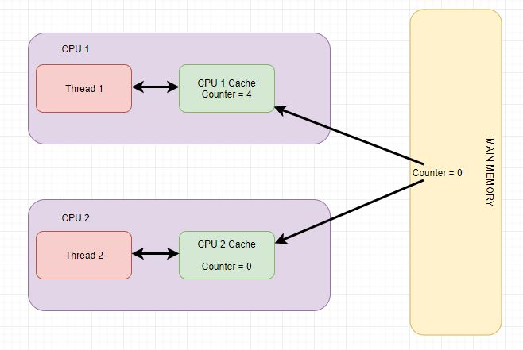

Khi một biến được khai báo với từ khóa static, vùng nhớ cho nó tồn tại theo vòng đời của chương trình. Ngay cả khi hàm được gọi nhiều lần, vùng nhớ cho biến static chỉ được cấp nhát một lần và giá trị của biến trong những lần gọi trước đó được lưu lại và được sử dụng để thực hiện thông qua các lượt gọi hàm tiếp theo. Điều này rất hữu ích để triển khai các ứng dụng nào khác mà trạng thái chức năng trước đó cần được lưu trữ.
Nếu ta gán 1 con trỏ là địa chỉ của biến static và ta đổi giá trị con trỏ thì giá trị biến static cũng đổi
Nếu ta trả về 1 kiểu con trỏ thì khi trả về cần thêm chữ static tại giá trị muốn trả về
Trong C, khi 1 biến đi sau từ khóa “extern” có nghĩa là:
Từ khóa volatile được sử dụng để đánh dấu một biến sẽ được lưu trữ trong main memory. Nghĩa là mọi lệnh đọc giá trị các biến volatile đều đọc từ main menory chứ không phải đọc từ CPU cache, việc ghi giá trị cho các biến volatile cũng tương tự sẽ ghi xuống main memory.
Trong ứng dụng đa luồng (multithread) khi mỗi luồng(thread) làm việc với các biến non-volatile(không có chứa từ khóa volatile) mỗi thread có thể sao chép chúng từ main memory vào CPU cache để thao tác giúp tăng performance. Nếu máy tính của bạn có nhiều CPU thì có thể mỗi thread sẽ chạy trên một CPU khác nhau đồng nghĩa với việc mỗi thread sẽ sao chép các biến vào CPU cache riêng của chúng.

Với các biến non-volatile thì chúng ta sẽ không đảm bảo rằng khi đọc dữ liệu từ main memory vào cpu cache và ghi dữ liệu từ CPU cache vào main memory. Chính vì thế giá trị của biến non-volatile có thể khác nhau ở từng thread và giá trị của chúng ở main memory cũng ko đảm bảo tính đồng nhất.
Giả sử thread 1 sẽ là thread tăng biến counter lên 1 và thread 2 đọc và xử lý. Nếu counter không phải là một volatile biến thì giá trị counter ở thread 1, main memory và thread 2 có khả năng sẽ khác nhau hoàn toàn
